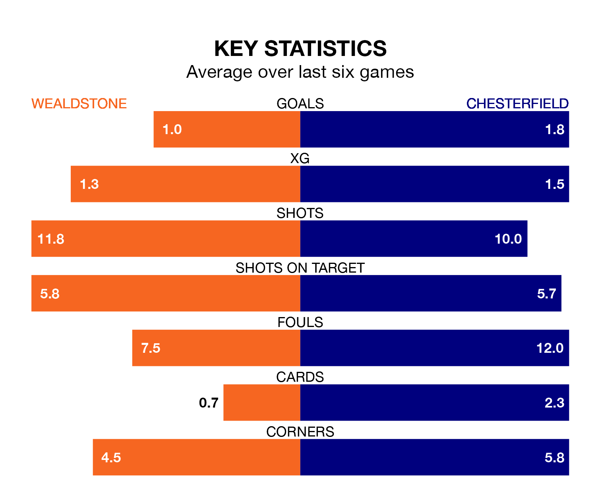

Chesterfield travel to Ruislip Manor Sports & Social Club for Saturday's match against Wealdstone looking to bounce back from defeat last time out in the National League.
The Spireites, who sit top of the league after 43 games, fell to a 3-1 home defeat to Kidderminster Harriers on April 1.
They face a Wealdstone side who picked up a win in their last match, a 4-2 victory against Dorking Wanderers, and who sit 19th in the table.
With 102 goals in 43 games so far this season, Chesterfield are the league's highest scorers with 2.4 goals per game. And they are conceding fewer than average, letting in 60 goals at a rate of 1.4 per game.
Wealdstone, meanwhile, are below average scorers, with 1.3 goals per game, compared to a league average of 1.5. They have conceded 1.6 goals per game.
The home team are in bad form in the National League, with one win and five losses from their last six games.
With two wins and a draw over that period, the Spireites's form is better – they have taken seven points from 18, compared to Wealdstone's three.
In the last 10 years, Wealdstone and Chesterfield have played each other on seven occasions. Wealdstone won one of them, Chesterfield four, and they drew twice.
On average, Wealdstone scored 1.0 goal and the Spireites 2.0 in those matches.
Their last meeting was on September 23, when Chesterfield won 3-2 at home.
Updated: 10:01 (UTC), 12/04/24